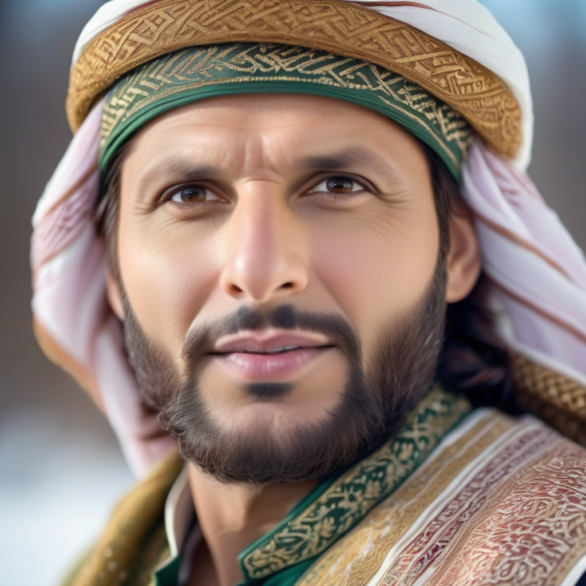
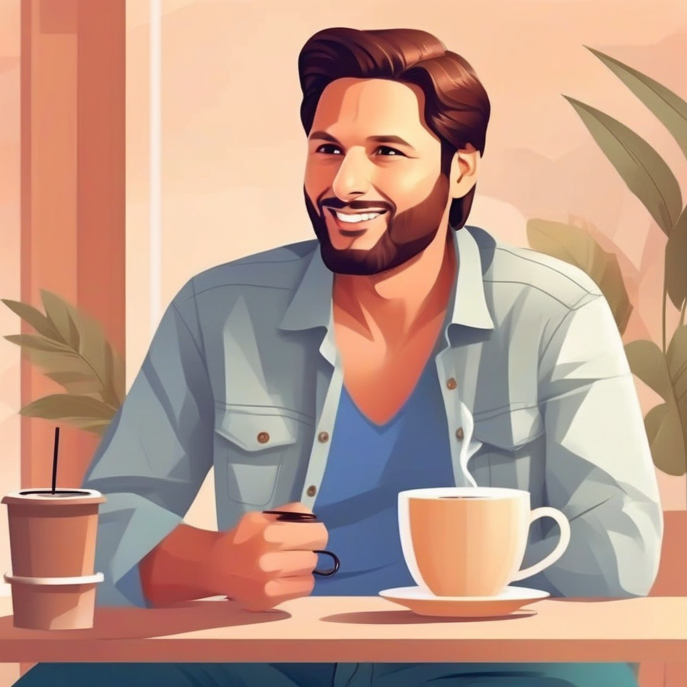
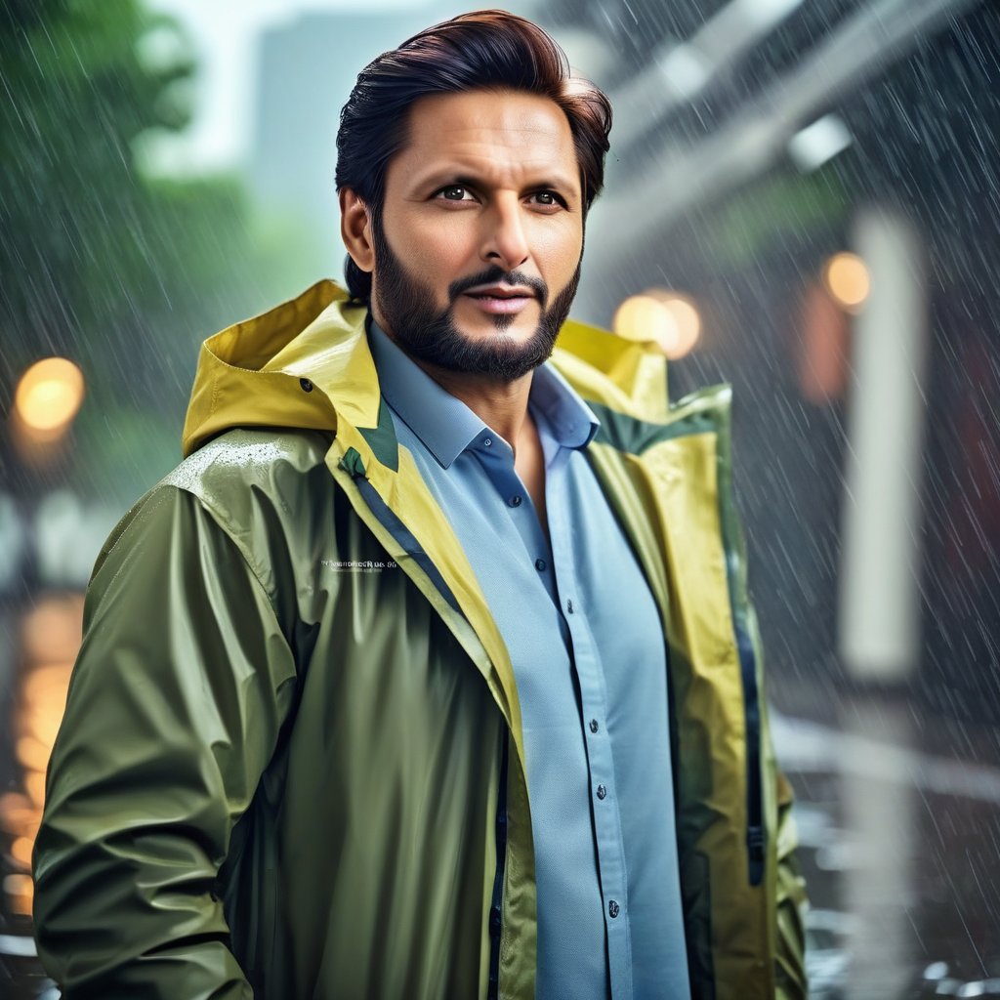
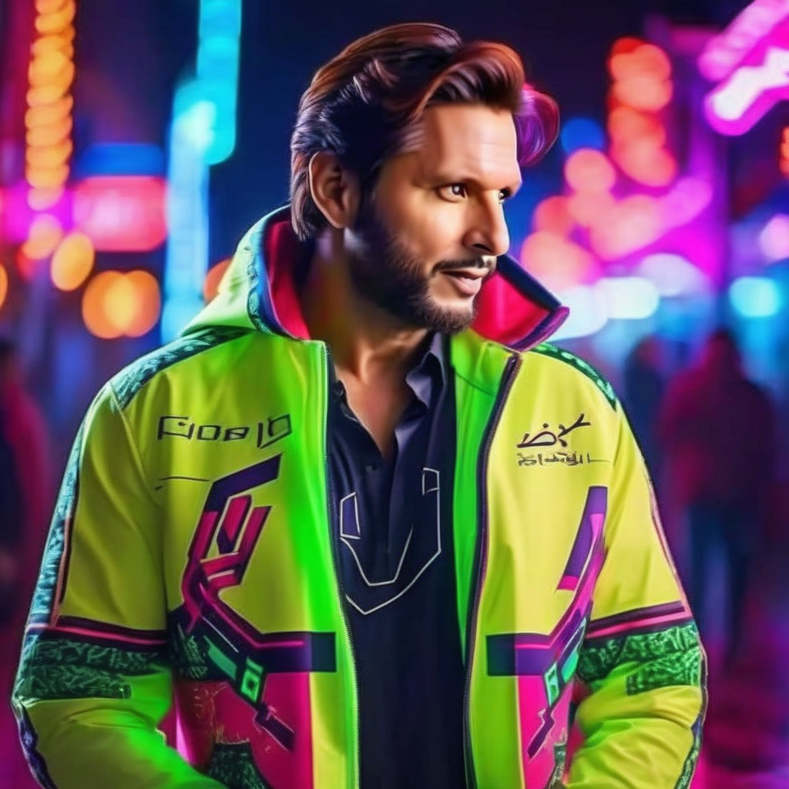

We fine-tuned an SDXL LoRA model on identity-specific data to generate high-quality portraits in multiple styles, scenes, and lighting conditions with reliable facial consistency.




Generated images27
Training Images
2700
Train Steps
1024
Resolution
30
Inference Steps
Problem
Generic image models struggle with identity consistency across outfits, poses, and scene prompts.
Solution
Fine-tune SDXL with DreamBooth LoRA on a curated personal dataset, then run controlled prompt templates for generation.
Outcome
Client-ready portraits with strong identity retention and repeatable style quality in varied contexts.
Under the hood
A clean end-to-end process from dataset curation to generated output delivery.
Dataset Prep
27 curated images
LoRA Training
SDXL + rank 32
Prompted Inference
Cinematic portrait outputs
Technical Depth
The trigger token and tailored prompt format keep facial consistency across different scenes and outfits.
Inference settings balance realism and stability with fixed steps, guidance, and high-quality negative prompts.
Notebook pipeline is reusable for additional identities and can be scaled into a service endpoint later.
We build domain-specific generative AI pipelines for teams that need consistency, control, and production readiness.